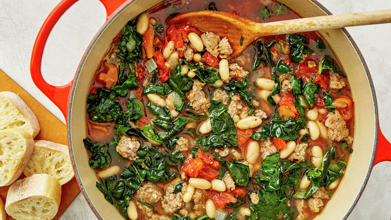

Sausage Soup

Fall is here!
This recipe is hearty, healthy and easy to make. The recipe here is
vegetarian, but can be made with any kind of sausage. I enjoy making this
recipe because of the "convenience factor". Most ingredients are
premeasured in cans or cartons. It also keeps well for meal prep.
ingredients
- A few glugs of olive oil to lube the dutch oven
- 1 tube of Impossible sausage
- 1 large onion finely diced
- 3 or 4 potatoes peeled and cubed
- 1 vegetable boullion cube, or a teaspoon of salt
- 1 bunch of chopped kale with the ribs removed
- 3 or 4 cloves of garlic
- 2 can of cannellini beans or northern beans
- 1 carton of low sodium vegetable broth
- 2 cups of water
- Zest of 1 lemon
- Juice of one lemon
- Quarter cup fresh chopped parsely
- 2 tablespoons of flour (for the roux)
- Equal parts butter or olive oil (for the roux)
How to
-
In a large dutch oven heat olive oil at medium high. Add onions and cook
until translucent.
- Once the onions are translucent, add garlic. Cook until fragrant.
-
Add potatoes, beans, boullion cube, and broth. Stir everything together.
- In a seperate pan, brown the Impossible sausage.
- When the potatoes are al dente, add sausage.
-
In the same pan the sausage was cooked in, add the butter or olive oil.
Once the butter has melted add equal parts flour to the pan. Stir and
mix until the roux is done.
-
Add the roux to the soup along with the kale. Stir until everything is
all nice a friendly. Put the lid on and let simmer for a couple minutes.
Medium heat.
-
Once the potatoes are soft, turn off the heat and add the lemon zest,
lemon juice and parsley. Stir and serve!
- I like to add pepper at the end.